Reference guide:
Model
|
View |
Tabular
data |
Object/relational
mapping |
Controllers
|
Application |
Customizing
OpenXava generates a default user interface from the model. In many simple
cases this is enough, but sometimes it is necessary to model with
precision the format of the user interface or view. In this chapter you
will learn how to do this.
Layout
The
@View annotation can be used in an entity or
embeddable class in order to define the layout of its members in the user
interface.
The syntax for
@View is:
@View(
name="name", // 1
members="members", // 2
extendsView="view" // 3 New in v3.1.2
)
public class MyEntity {
- name (optional): This name identifies the view, and
can be used in other OpenXava places (for example in application.xml)
or from another entity. If the view has no name then the view is
assumed as the default one, that is the natural form to display an
object of this type. If the name is Simple or Search
this view will be used by default to create the search dialog (since
v4m4).
- members (optional): Indicates the members to
display and its layout in the user interface. By default it displays
all members (excluding hidden ones) in the order in which are declared
in the model. Inside members you can use section and group elements
for layout purposes; or action element for showing a link associated
to a custom action inside your view.
- extendsView (optional): (New in v3.1.2)
All the members in the extendsView view are automatically
included in the current one. See view
inheritance.
You can define several views for an entity using the
@Views annotation.
By default (if you do not use
@View) all members are displayed
in the order of the model, and one for each line.
For example, a model like this:
@Entity
@IdClass(ClerkKey.class)
public class Clerk {
@Id @Required
@Column(length=3, name="ZONE")
private int zoneNumber;
@Id @Required
@Column(length=3, name="OFFICE")
private int officeNumber;
@Id @Required
@Column(length=3, name="NUMBER")
private int number;
@Required @Column(length=40)
private String name;
// Getters and setters
...
}
Generates a view that looks like this:

You can choose the members to display and its order, with the
members
attribute:
@Entity
@IdClass(ClerkKey.class)
@View(members="zoneNumber; officeNumber; number")
public class Clerk {
In this case
name is not shown.
Also you can use
members for tunning the layout:
@View(members=
"zoneNumber, officeNumber, number;" +
"name"
)
You can observe that the member names are separated by commas or by
semicolon, this is used to indicate layout. With comma the member is
placed just the following (at right), and with semicolon the next member
is put below (in the next line). Hence the previous view is displayed in
this way:

Aligned by columns
Sometimes it's useful to layout members aligned by columns, like in a
table. For example, the next view:
@View( members=
"number, type, name;" +
"telephone, email, website")
...will be displayed as following:
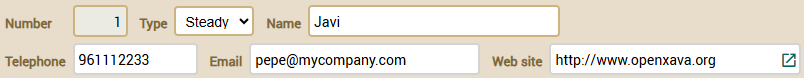
This is ugly. It would be better to have all data aligned by columns. You
can define the view in this way:
@View( members=
"#number, type, name;" +
"telephone, email, website")
Note that now you use
# at the beginning of
members. Now you obtain
this result:

Now, thanks to the
#, the members are aligned by columns.
This feature is also available for the groups and sections (see below). Moreover, if you put
alignedByColumns=true in
xava.properties
all elements are aligned by column even if you do not specify
#
in the view.
Groups
With groups you can lump a set of related properties and it has visual
effect. For defining a group you only need to put the name of the group
and after it its members within square brackets. Just in this way:
@View(members=
"id [ zoneNumber, officeNumber, number ];" +
"name"
)
In this case the result is:

You can see the three properties within the group are displayed inside a
frame, and
name is displayed outside this frame. The semicolon
before
name causes it to appear below, if not it appears at
right.
You can put several groups in a view:
@View(members=
"general [" +
" number;" +
" type;" +
" name;" +
"]" +
"contact [" +
" telephone;" +
" email;" +
" website;" +
"]"
)
In this case the groups are shown one next to the other:

If you want one below the other then you must use a semicolon after the
group, like this:
@View(members=
"general [" +
" number;" +
" type;" +
" name;" +
"];" +
"contact [" +
" telephone;" +
" email;" +
" website;" +
"]"
)
In this case the view is shown this way:

Nested groups are allowed. This is a pretty feature that allows you to
layout the elements of the user interface in a flexible and simple way.
For example, you can define a view as this:
@View(members=
"invoice;" +
"deliveryData [" +
" type, number;" +
" date;" +
" description;" +
" shipment;" +
" transportData [" +
" distance; vehicle; transportMode; driverType;" +
" ]" +
" deliveryByData [" +
" deliveredBy;" +
" carrier;" +
" employee;" +
" ]" +
"]"
)
And the result will be:

Sometimes it's useful to layout members aligned by columns, like in a
table. For example, the next view:
@View(name="Amounts", members=
"year, number;" +
"amounts [" +
"customerDiscount, customerTypeDiscount, yearDiscount;" +
"amountsSum, vatPercentage, vat;" +
"]"
)
...will be displayed as following:

This is ugly. It would be better to have all data aligned by columns. You
can define the group in this way:
@View(name="Amounts", members=
"year, number;" +
"amounts [#" +
"customerDiscount, customerTypeDiscount, yearDiscount;" +
"amountsSum, vatPercentage, vat;" +
"]"
)
Note that now you use
[# instead of
[. Now you obtain
this result:

Now, thanks to the
#, the members are aligned by columns.
This feature is also available for the sections (see below) and for
members,
that is for the root view
(new in v4.7.1). Moreover, if you put
alignedByColumns=true (new in v4.7.1) in
xava.properties
all elements are aligned by column even if you do not specify
#
in the view.
Sections
Furthermore the members can be organized in sections. For defining a
section you only need to put the name of the section and after it its
members within braces. Let's see an example from the
Invoice
entity:
@View(members=
"year, number, date, paid;" +
"comment;" +
"customer { customer }" +
"details { details }" +
"amounts { amountsSum; vatPercentage; vat }" +
"deliveries { deliveries }"
)
The visual result is:

The sections are rendered as tabs that the user can click to see the data
contained in that section. You can observe how in the view you put members
of all types (not only properties); thus,
customer is a
reference,
details and
deliveries are collections.
Nested sections are allowed. For example, you can define a view as this:
@View(name="NestedSections", members=
"year, number, date;" +
"customer { customer }" +
"data {" +
" details { details }" +
" amounts {" +
" vat { vatPercentage; vat }" +
" amountsSum { amountsSum }" +
" }" +
"}" +
"deliveries { deliveries }"
)
In this case you will obtain a user interface like this:

As in the groups case, the sections allow using
# for aligning
by columns, like this:
@View(name="AlignedAmountsInSection", members=
"year, number;" +
"customer { customer }" +
"details { details }" +
"amounts {#" +
"customerDiscount, customerTypeDiscount, yearDiscount;" +
"amountsSum, vatPercentage, vat;" +
"}"
)
With the same effect as in the
group
case.
Frames side by side
Members that are displayed within a frame, such as references, groups or collections, can be displayed side by side
instead of one below the other, if you wish. That is, it is possible to arrange
two frames in the same row. To do this you only have to separate them with a comma
instead of a semicolon, as you can see in this example:
@View( members=
"name;" +
"seller, alternateSeller"
)
In this case name is a plain property, but seller and alternateSeller
are references. The visual result would be:
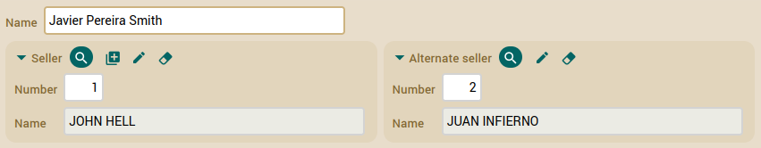
Where you can see that seller and alternateSeller are displayed on the same line.
This also works for collections and groups. Additionally, you can combine them, you can put a reference
and a group (for example) on the same line.
What is not allowed is to place members that are displayed with a simple field,
such as properties or references with @DescriptionsList, and members that use frames like reference,
groups and collections on the same line. If you declare it this way in @View, OpenXava will show the frames on their own line.
For example, if you have this code:
@View( members="name, seller" )
Where you indicate that name, which is a plain property, and seller, which is a reference,
should be displayed side by side, since you separate them by comma. When displayed,
OpenXava ends up doing it like this:
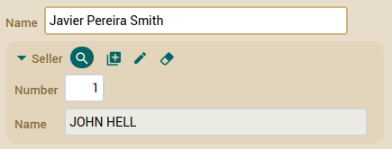
That is, one below the other. OpenXava has put the seller reference on its own line.
We see how we cannot display simple fields and frames side by side.
View
inheritance (new in v3.1.2)
On defining a new view you can inherit the members and layout of an
already existing view. In this way, you can avoid copy & paste, and at
the same time you keep your code shorter and easier to update.
This is done using
extendsView. For example if you have a view
like the next one:
@View(name="VerySimple", members="name, sex"),
That produces the next UI:

If you want a new view that extends this one just write the next code:
@View(name="Simple", extendsView="VerySimple", members="mainLanguage")
and you will have the next view:

As you see the members of
VerySimple view are included
automatically in
Simple view, and the own members of view are
added at the end.
In this case you extend a view of the same entity, but you can also extend
a view of the parent entity, if you are using JPA inheritance. That is, if
you have an entity called
Programmer:
@Entity
@View(name="WithSections",
members =
"name, sex;" +
"mainLanguage;" +
"experiences { experiences }"
)
public class Programmer {
You can reuse the
WithSections view in a child class of
Programmer:
@Entity
@View(name="WithSections", extendsView="super.WithSections",
members =
"favouriteFramework;" +
"frameworks { frameworks }"
)
public class JavaProgrammer extends Programmer {
As you can see, the way to extends a view of the superclass is using the
super
prefix for
extendsView. In this case the
WithSections
view of the
JavaProgrammer entity will have all the members of
the
WithSections view of
Programmer entity plus its
own ones.
Look the aspect of
WithSections view of
JavaProgrammer:

If you want to extend the default view (the default view is the view with
no name) just use the word DEFAULT as name for
extendsView. As
in the next example:
@View(members="name, sex; mainLanguage, favouriteFramework; experiences")
@View(name="Complete", extendsView="DEFAULT", members = "frameworks")
The
Complete view will have all the members of default view (
name,
sex, mainLanguage, favouriteFramework, experiences) plus
frameworks.
View inheritance only applies to members and their layout. Actions, events
and other refinements done at member level are not inherited.
Responsive
layout (new in v5.7)
Responsive layout means that the layout of the UI is adapted to the page
size, so your application works fine in a 7" tablet, a 15" laptop or a 22"
desktop, with the same code. To activate responsive layout in OpenXava add
the next entry to
xava.properties of your project:
flowLayout=true
After it, OpenXava adjusts the fields layout to the page size. For
example, from the next
@View:
@View( members=
"#number, description;" +
"color, photos;" +
"family, subfamily;" +
"warehouse, zoneOne;" +
"unitPrice, unitPriceInPesetas;" +
"unitPriceWithTax"
)
With a small screen you get:
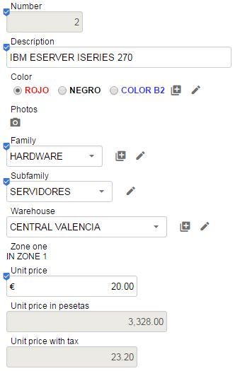
With a not so small screen you get:

With a larger screen:
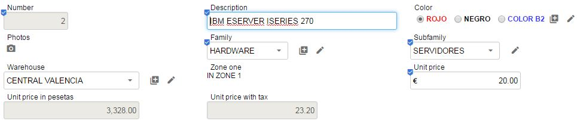
And so on. Note as # , and ; from
@View are ignored.
Layout
philosophy
It's worth to notice that you have groups instead of frames and sections
instead of tabs. Because OpenXava tries to maintain a high level of
abstraction, that is, a group is a set of members semantically related,
and the sections allow to split the data into parts. This is useful, if
there is a big amount of data that cannot be displayed simultaneous. The
fact that the group is displayed as frames or sections in a tabbed pane is
only an implementation issue. For example, OpenXava (maybe in future) can
choose to display sections (for example) with trees or so.
Rules for view
annotations
You can annotate a member (property, reference or collection) with several
annotations that refine its display style and behaviour. Moreover you can
define that effect of these annotations only applies to some views.
For example if you can have an
entity with several views:
@Entity
@View( members= "number; type; name; address" )
@View( name="A", members= "number; type; name; address; seller" )
@View( name="B", members= "number; type; name; seller; alternateSeller" )
@View( name="C", members="number; type; name; address; deliveryPlaces" )
public class Customer {
If you're using an OpenXava version older than 6.1 you have to use
@Views
to wrap the views:
@Entity
@Views({ // Only needed until v6.0.2
@View( members= "number; type; name; address" ),
@View( name="A", members= "number; type; name; address; seller" ),
@View( name="B", members= "number; type; name; seller; alternateSeller" ),
@View( name="C", members="number; type; name; address; deliveryPlaces" )
})
public class Customer {
If now you want the
name property will be read only. You can
annotate it in this way:
@ReadOnly
private String name;
In this way
name is read only in all views. However, you may
want that
name will be read only only on views
B and
C,
then you can define the member as following:
@ReadOnly(forViews="B, C")
private String name;
Another way for defining this same case is:
@ReadOnly(notForViews="DEFAULT, A")
private String name;
Using
notForViews you indicate the views where
name
property is not read only. DEFAULT is used for referencing to the default
view, the view with no name.
Some annotations have one or more values, for example for indicating which
view of the referenced type will be used for displaying a reference you
use the
@ReferenceView annotation:
@ReferenceView("Simple")
private Seller seller;
In this case when the seller is displayed the view
Simple,
defined in
Seller class, is used.
What if you want to use
Simple view of
Seller only in
B view of
Customer? It's easy:
@ReferenceView(forViews="B", value="Simple")
private Seller seller;
What if you want to use
Simple view of
Seller only in
B view of
Customer and the
VerySimple view of
Seller for
A view of
Customer? In this case
you have to use several
@ReferenceView:
@ReferenceView(forViews="B", value="Simple"),
@ReferenceView(forViews="A", value="VerySimple")
If you're using a version previous to v6.1 in order to have several
@ReferenceView
you must use
@ReferenceViews, just in this way:
@ReferenceViews({ // Only needed until v6.0.2
@ReferenceView(forViews="B", value="Simple"),
@ReferenceView(forViews="A", value="VerySimple")
})
These rules apply to all the annotations in this chapter, except
@View
and
@Views.
Property
customization
You can refine the visual aspect and behavior of a property in a view
using the next annotations:
@ReadOnly // 1
@LabelFormat // 2
@DisplaySize // 3
@OnChange // 4
@Action // 5
@Editor // 6
@LabelStyle // 7 New in v4m4
@LargeDisplay // 8 New in v7.4
private type propertyName;
All these annotations follow the
rules
for view annotations and all they are optionals. OpenXava always
assumes a correct default values if they are omitted.
- @ReadOnly (OX): If you mark a property with this annotation
it never will be editable by the final user in this view. An
alternative to this is to make the property editable or not editable
programmatically using org.openxava.view.View. Since v6.2 you can
specify @ReadOnly(onCreate=false) in order the property will
be editable on creating a new entity, but read only in all other
cases.
- @LabelFormat
(OX): Format to display the label of this
property. Its value can be LabelFormatType.NORMAL, LabelFormatType.SMALL or LabelFormatType.NO_LABEL.
- @DisplaySize (OX): The size in characters of the editor in the
User Interface used to display this property. The editor display only
the characters indicated by @DisplaySize but it allows to
the user to entry until the total size of the property. If @DisplaySize
is not specified, the value of the size of the property is assumed.
- @OnChange
(OX): Action to execute when the value of this
property changes. Only one @OnChange action per view is
allowed.
- @Action
(OX): Actions (showed as links, buttons or images
to the user) associated (visually) to this property and that the final
user can execute. It's possible to define several @Action
for each view.
- @Editor
(OX): Name of the editor to use for displaying the
property in this view. The editor must be declared in openxava/src/main/resources/xava/default-editors.xml
or src/main/resources/xava/editors.xml of your project. Before
v7 they were OpenXava/xava/default-editors.xml and xava/editors.xml
of your project.
- @LabelStyle (OX): (New in v4m4): Style to display the
label of this property. It has the predefined styles 'bold-label',
'italic-label' and 'reverse-label'; though
you can use your own custom style if you define it in a CSS file.
- @LargeDisplay
(OX): (New in v7.4): To display the value
of the property in large format to make the
value clearly visible. Generally
with a large font, inside a small frame with spacing, etc. Also it
allows to show an icon, a prefix and a suffix optionally.
Apart of the above view related annotations you can annotate properties
with stereotype
like annotations.
Label
format
A simple example of using
@LabelFormat:
@LabelFormat(LabelFormatType.SMALL)
private int zipCode;
In this case the zip code is displayed as:

The
LabelFormatType.NORMAL format is the default
style (with a normal label at the left) and the
LabelFormatType.NO_LABEL simply does not
display the label. Since v4m4 you can use
defaultLabelFormat in
xava.properties to specify the label format to be used when
@LabelFormat
is omitted.
Property
value change event
If you wish to react to the event of a value change of a property you can
use
@OnChange as following:
@OnChange(OnChangeCustomerNameAction.class)
private String name;
The code to execute is:
package org.openxava.test.actions;
import org.openxava.actions.*;
import org.openxava.test.model.*;
/**
* @author Javier Paniza
*/
public class OnChangeCustomerNameAction extends OnChangePropertyBaseAction { // 1
public void execute() throws Exception {
String value = (String) getNewValue(); // 2
if (value == null) return;
if (value.startsWith("Javi")) {
getView().setValue("type", Customer.Type.STEADY); // 3
}
}
}
The action has to implement
IOnChangePropertyAction although it
is more convenient to extend it from
OnChangePropertyBaseAction
(1). Within the action you can use
getNewValue() (2) that
provides the new value entered by user, and
getView() (3) that
allows you to access programmatically the
View (change values, hide members, make them
editable and so on).
Actions
of property
You can also specify actions (
@Action) that the user can click directly:
@Action("Delivery.generateNumber")
private int number;
In this case instead of an action class you have to write the action
identifier that is the controller name and the action name. This action
must be registered in
controllers.xml in this way:
<controller name="Delivery">
...
<action name="generateNumber" hidden="true"
class="org.openxava.test.actions.GenerateDeliveryNumberAction">
<use-object name="xava_view"/> <!-- Not needed since v4m2 -->
</action>
...
</controller>
The actions are displayed as a link or an image beside the property. Like
this:

By default the action link is present only when the property is editable,
but if the property is read only (
@ReadOnly) or
calculated
then it is always present. You can use the attribute
alwaysEnabled
to
true so that the link is always present, even if the property
is not editable. As following:
@Action(value="Delivery.generateNumber", alwaysEnabled=true)
The attribute
alwaysEnabled is optional and its default value is
false.
The code of previous action is:
package org.openxava.test.actions;
import org.openxava.actions.*;
/**
* @author Javier Paniza
*/
public class GenerateDeliveryNumberAction extends ViewBaseAction {
public void execute() throws Exception {
getView().setValue("number", new Integer(77));
}
}
A simple but illustrative implementation. You can use any action defined
in
controllers.xml and its behavior is the normal for an
OpenXava action. In the
chapter
7 you will learn more details about actions.
Optionally you can make your action an
IPropertyAction (this is only available for
actions associated to properties with
@Action annotation), thus
the container view and the property name are injected in the action by
OpenXava. The above action class could be rewritten in this way:
package org.openxava.test.actions;
import org.openxava.actions.*;
import org.openxava.view.*;
/**
* @author Javier Paniza
*/
public class GenerateDeliveryNumberAction
extends BaseAction
implements IPropertyAction { // 1
private View view;
private String property;
public void execute() throws Exception {
view.setValue(property, new Integer(77)); // 2
}
public void setProperty(String property) { // 3
this.property = property;
}
public void setView(View view) { // 4
this.view = view;
}
}
This action implements
IPropertyAction (1), this required that
the class implements
setProperty() (3) and
setView()
(4), these values are injected in the action object before call to
execute()
method, where they can be used (2). In this case you does not need to
inject
xava_view object when defining the action in
controllers.xml.
The view injected by
setView() (4) is the inner view that
contains the property, for example, if the property is inside an aggregate
the view is the view of that aggregate not the main view of the module.
Thus, you can write more reusable actions.
Choosing
an editor (property)
An editor display the property to the user and allows him to edit its
value. OpenXava uses by default the editor associated to the stereotype or
type of the property, but you can specify a concrete editor to display a
property using
@Editor.
For example, OpenXava uses a combo for editing the properties of type
enum,
but if you want to display a property of this type in some particular view
using a radio button you can define that view in this way:
@Editor(forViews="TypeWithRadioButton", value="ValidValuesRadioButton")
private Type type;
public enum Type { NORMAL, STEADY, SPECIAL };
In this case for displaying/editing the editor
ValidValuesRadioButton
will be used, instead of default one.
ValidValuesRadioButton is
defined in
openxava/src/main/resources/xava/default-editors.xml
(in
OpenXava/xava/default-editors.xml for v6 or older) as
following:
<editor name="ValidValuesRadioButton" url="radioButtonEditor.jsp"/>
This editor is included with OpenXava, but you can create your own editors
with your custom JSP code and declare them in the file
editors.xml
in
src/main/resources/xava (just
xava in v6 or older) of
your project.
This feature is for changing the editor only in one view. If you want to
change the editor for a type, steroetype or a property of a model at
application level then it's better to configure it using
editors.xml
file.
Dynamic
combos (new in v5.8)
For a combo with a static list of elements you can use a property of type
enum. For a combo that get data from database you can use a
reference with
@DescriptionsList. If you need something else
since v5.8 you have some methods in
org.openxava.view.View class
that allows you to create a drop-down list using your own logic for any
property. For example, for a simple property like this:
private String color;
You can add a combo programmatically in this way:
getView().addValidValue("color", "wht", "White");
getView().addValidValue("color", "blk", "Black");
This creates a combo for
color property with two values
wht
with label
White and
blk with label
Black.
In addition to
addValidValue(),
you have
removeValidValue() ,
getValidValues()
and
hasValidValues()
available. Since v6.3 you also have
clearValidValues(),
disableValidValues(),
removeBlankValidValue()
and
hasBlankValidValue().
Since v7.1 you can select and edit the selected option or enter a new
value directly using
EditableValidValues editor, for example:
@Editor("EditableValidValues")
@Column(length = 15)
private String color;
In this example selecting
White, you can edit it by
White
beige or enter a new value as
Yellow. These new values will
not be added to the original list of options for use in other records.
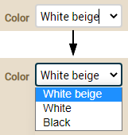
Large display format (new in
v7.4)
It is possible to display the value of a property in a large size. This
way, we can highlight the property in the view or create a dashboard-style
view where all the data is in a large format.
You just have to annotate your
properties with
@LargeDisplay,
like this:
@LargeDisplay
int year;
@Money @LargeDisplay
BigDecimal discount;
It will be displayed like this:
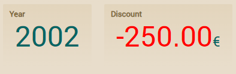
Notice how, in the case of the discount
property, the value appears in red. This is because negative values are
displayed in red (this color can be changed via CSS). Also, note how it
has the euro symbol as a suffix. This is because the property is
annotated with @Money, in which case the currency symbol is
displayed as a prefix or suffix according to the
server's locale.
We also have the option to
specify which prefix or suffix we want, using the prefix and suffix
attributes:
@LargeDisplay(prefix="€")
BigDecimal amountsSum;
@LargeDisplay(suffix="%", icon="label-percent-outline")
BigDecimal vatPercentage;
It would be displayed as:
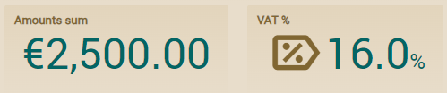
Now the euro symbol appears as a
fixed prefix, regardless of whether the property is annotated with
@Money
or not. And one more detail, an icon is displayed on the
vatPercentage
property. We achieved this with
icon="label-percent-outline".
The icons are identifiers from
Material
Design Icons.
As with all visual elements in
OpenXava, you can change the style of the large display format (
@LargeDisplay),
such as font size, spacing, etc., using CSS. The available CSS classes
are
.ox-large-display, .ox-large-display-suffix,
.ox-large-display-negative, .ox-large-display-value, or
.ox-large-display
i for the icon. For colors, you can adjust the values of the
variables
--large-display-color, --large-display-negative-color,
and
--large-display-icon-color. You can include the CSS code in
custom.css or in your own style as explained in the
documentation
on custom visual styling.
Reference
customization
You can refine the visual aspect and behavior of a reference in a view
using the next annotations:
@ReferenceView // 1
@ReadOnly // 2
@NoFrame // 3
@NoCreate // 4
@NoModify // 5
@NoSearch // 6
@AsEmbedded // 7
@SearchAction // 8
@SearchListCondition // 9 New in v4m4
@DescriptionsList // 10
@LabelFormat // 11
@Action // 12
@OnChange // 13
@OnChangeSearch // 14
@Editor // 15 New in v3.1.3
@LabelStyle // 16 New in v4m4
@Collapsed // 17 New in v5.0
@SearchListTab // 18 New in v7.4
@NewView // 19 New in v7.7
@EditView // 20 New in v7.7
@ManyToOne
private type referenceName;
All these annotations follow the
rules
for view annotations and all they are optionals. OpenXava always
assumes a correct default values if they are omitted.
- @ReferenceView
(OX): If you omit this annotation, then the
default view of the referenced object is used. With this annotation
you can indicate that it uses another view.
- @ReadOnly (OX): If you use this annotation the reference
never will be editable by final user in this view. An alternative is
to make the property editable/uneditable programmatically using org.openxava.view.View. Since v6.2 you can
specify @ReadOnly(onCreate=false) in order the reference will
be editable on creating a new entity, but read only in all other
cases.
- @NoFrame
(OX): If the reference is displayed with no frame.
By default the references are displayed with frame.
- @NoCreate
(OX): By default the final user can create new
objects of the referenced type from here. If you use this annotation
this will not be possible.
- @NoModify
(OX): By default the final user can modify the
current referenced object from here. If you use this annotation this
will not be possible.
- @NoSearch (OX): By default the user will have a link to make
searches with a list, filters, etc. If you use this annotation this
will not be possible.
- @AsEmbedded (OX): By default in the case of a reference to an
embeddable
the user can create and edit its data, while in the case of a
reference to an entity the user can only to choose an existing entity.
If you put @AsEmbedded then the user interface for
references to entities behaves as a in the embedded case, allowing to
the user to create a new object and editing its data directly. It has
no effect in case of a reference to embeddables. Warning! If you
remove an entity its referenced entities are not removed, even if they
are displayed using @AsEmbedded.
- @SearchAction
(OX): Allows you to specify your own action for
searching when the user click in the search link. Only one by view is
allowed.
- @SearchListCondition
(OX): (New in v4m4) Condition to be used
for listing the selectable elements that can be used as a reference.
- @DescriptionsList
(OX): Display the data as a list of descriptions,
typically as a combo. Useful when there are few elements of the
referenced object.
- @LabelFormat (OX): Format to display the label of the
reference. It only applies if this reference is annotated with @DescriptionsList.
Works as in property
case.
- @Action (OX): Actions (showed as links, buttons or images
to the user) associated (visually) to this reference and that the
final user can execute. Works as in property
case. You can define several actions for each reference in the
same view.
- @OnChange
(OX): Action to execute when the value of this
reference changes. Only one @OnChange action by view is
allowed.
- @OnChangeSearch
(OX): Allows you to specify your own action for
searching when the user type a new key. Only one by view is allowed.
- @Editor
(OX): (New in v3.1.3) Name of the editor
to use for displaying the reference in this view. The editor must be
declared in openxava/src/main/resources/xava/default-editors.xml
or src/main/resources/xava/editors.xml of your project. Before
v7 they were OpenXava/xava/default-editors.xml and xava/editors.xml
of your project.
- @LabelStyle (OX): (New in v4m4) Style to display the
label of the reference. It only applies if this reference is annotated
with @DescriptionsList. Works as in property
case.
- @Collapsed (OX): (New in v5.0) The reference will
be shown collapsed for the indicated views. Visually this means that
the frame surrounding the reference view will be initially closed.
Later the user will be able to set his preferences by clicking on the
expansion icon.
- @SearchListTab
(OX): (New in v7.4) Define the tab to
display in the list when searching. If you omit this annotation, when
searching, the default tab will be displayed.
- @NewView
(OX): (New in v7.7) View of the referenced
object to use when creating a new one from this reference.
- @EditView
(OX): (New in v7.7) View of the referenced
object to use when modifying it from this reference.
If you do not use any of these annotations OpenXava draws a reference
using the default view. For example, if you have a reference like this:
@ManyToOne
private Family family;
The user interface will look like this:

Choose
view
The most simple customization is to specify the view of the referenced
object that you want to use. This is done by means of
@ReferenceView:
@ManyToOne(fetch=FetchType.LAZY)
@ReferenceView("Simple")
private Invoice invoice;
In the
Invoice entity you must have a view named
Simple:
@Entity
@Views({
...
@View(name="Simple", members="year, number, date, yearDiscount;"),
...
})
public class Invoice {
Thus, instead of using the default view of
Invoice (that shows
all invoice data) OpenXava will use the next one:

Customizing frame
If you combine
@NoFrame with groups you can group visually a
property that is not a part of a reference with that reference, for
example:
@View( members=
...
"seller [" +
" seller; " +
" relationWithSeller;" +
"]" +
...
)
public class Customer {
...
@ManyToOne(fetch=FetchType.LAZY)
@NoFrame
private Seller seller;
...
}
And the result:

Custom
search action
The final user can search a new value for the reference simply by keying
the new code and leaving the editor the data of reference is obtained; for
example, if the user keys "1" on the seller number field, then the name
(and the other data) of the seller "1" will be automatically filled. Also
the user can click in the lantern, in this case the user will go to a list
where he can filter, order, etc, and mark the wished object.
To define your custom search logic you have to use
@SearchAction in this way:
@ManyToOne(fetch=FetchType.LAZY) @SearchAction("MyReference.search")
private Seller seller;
When the user clicks in the lantern your action is executed, which must be
defined in
controllers.xml.
<controller name="MyReference">
<action name="search" hidden="true"
class="org.openxava.test.actions.MySearchAction"
image="images/search.gif">
<use-object name="xava_view"/> <!-- Not needed since v4m2 -->
<use-object name="xava_referenceSubview"/> <!-- Not needed since v4m2 -->
<use-object name="xava_tab"/> <!-- Not needed since v4m2 -->
<use-object name="xava_currentReferenceLabel"/> <!-- Not needed since v4m2 -->
</action>
...
</controller>
The logic of your
MySearchAction is up to you. You can, for
example, refining the standard search action to filter the list for
searching, as follows:
package org.openxava.test.actions;
import org.openxava.actions.*;
/**
* @author Javier Paniza
*/
public class MySearchAction extends ReferenceSearchAction {
public void execute() throws Exception {
super.execute(); // The standard search behaviour
getTab().setBaseCondition("${number} < 3"); // Adding a filter to the list
}
}
You will learn more about actions in
chapter
7.
Condition for search list
(reference, new in v4m4)
When the user clicks in the lantern he go to a list where he can filter,
order, etc, and mark the wished object. You can use
@SearchAction
to overwrite completely this behavior, though if you only want to set a
custom condition for the list, then using
@SearchListCondition is faster. Since
v7.4,
the condition supports the use of
${this.} to refer to a
property of the entity itself. The above example can be rewritten as
following:
private int code;
@ManyToOne(fetch=FetchType.LAZY)
@SearchListCondition("${number} < 3")
@SearchListCondition("${number} < ${this.code}", forViews="SearchListCondition") // ${this.} New in v7.4
private Seller seller;
Note as you do not need to create any action.
Custom creation action
If you do not use
@NoCreate
annotation the user will have a link to create a new object. It's the icon
with a + that we've marked in red:
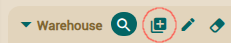
OpenXava will display a
dialog with the default view of the referenced component and allow the
user to enter values and click a button to create it. Like this:
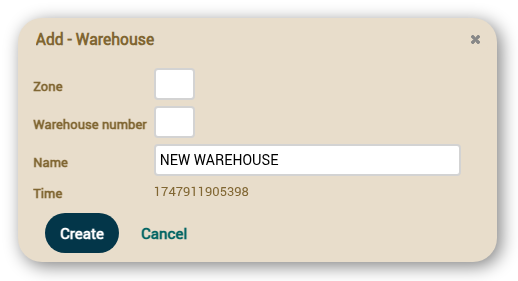
But we can customize how this
creation dialog works, for all references to
Warehouse in our
application. To do this, we must create a controller named as the entity
with the suffix
Creation (
WarehouseCreation, CustomerCreation,
ProductCreation, etc). If OpenXava sees this controller it uses it
instead of the default one to allow creating a new object from a
reference. For example, you can write in your
controllers.xml:
<!--
Because its name is WarehouseCreation (model name + Creation) it is used
by default for creating from reference, instead of NewCreation.
The action 'new' is executed automatically.
-->
<controller name="WarehouseCreation">
<extends controller="NewCreation"/>
<action name="new" hidden="true"
class="org.openxava.test.actions.CreateNewWarehouseFromReferenceAction"/>
<action name="saveNew" by-default="almost-always"
class="org.openxava.test.actions.SaveNewWarehouseFromReferenceAction"/>
</controller>
In this case when the user clicks on the create icon, the user is
directed to the default view of
Warehouse and the actions in
WarehouseCreation
will be allowed. If we have a
new action, it is executed
automatically right after opening the dialog, we can use it to initialize
the view if needed. We define it as hidden, so it's not shown as a button
to the user. Here's an example implementation:
package org.openxava.test.actions;
import org.openxava.actions.*;
public class CreateNewWarehouseFromReferenceAction extends NewAction {
@Override
public void execute() throws Exception {
super.execute();
getView().setValue("name", "NEW WAREHOUSE");
}
}
In this case, it sets a default
value for the name, but we can do more complex things like hiding fields,
using a different view for the dialog, etc. Note that it doesn't call showDialog()
because when the new action is executed, OpenXava has already
opened the dialog.
In our example we have also
overridden the saveNew action, which is executed when the Create
button in the dialog is clicked. Here's an example implementation:
package org.openxava.test.actions;
import org.openxava.actions.*;
public class SaveNewWarehouseFromReferenceAction extends SaveNewAction {
@Override
public void execute() throws Exception {
String name = getView().getValueString("name"); // Get name before closing the dialog
super.execute(); // Saves the warehouse and closes the dialog (if not validation errors)
if (!getErrors().contains() && name.equals("NEW WAREHOUSE")) {
addWarning("warehouse_created_using_default_name"); // Message in i18n messages file
}
}
}
This is also a very simple logic.
If it detects that we have saved using the default value for the name, it
displays a warning message.
It is not necessary to override
both actions, we can implement only new or only saveNew.
We can also override the cancel action if needed. Additionally, if
we add extra actions to our WarehouseCreation controller, these
actions will appear as additional buttons in the creation dialog.
Since v7.7 you can use the @NewAction
annotation to define custom behavior for the creation action in a specific
reference. For example:
@NewAction("Carrier.createWarehouse")
@ManyToOne
Warehouse mainWarehouse;
In this case, when the user clicks on the create icon for the
mainWarehouse reference in Carrier, the action Carrier.createWarehouse
will be executed instead of the default one. This only affects this specific reference;
other references to Warehouse in the application will use the standard behavior.
Custom modification action
If you do not use
@NoModify
annotation the user will have a link to modify the current object
displayed in the reference. It's the icon with a pencil that we've marked
in red:
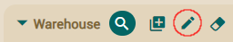
OpenXava will display a
dialog with the default view of the referenced component and allow the
user to enter values and click a button to modify current values. Like
this:
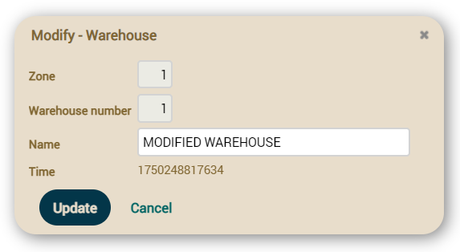
But we can customize how this
modification dialog works, for all references to
Warehouse in
our application. To do this, we must create a controller named as the
entity with the suffix
Modification (
WarehouseModification,
CustomerModification, ProductModification,
etc). If OpenXava sees this controller it uses it instead of the default
one to allow modifying an existing object from a reference. For example,
you can write in your
controllers.xml:
<!--
Because its name is WarehouseModification (model name + Modification) it is used
by default for modifying from reference, instead of Modification.
The action 'search' is executed automatically.
-->
<controller name="WarehouseModification">
<extends controller="Modification"/>
<action name="search" hidden="true"
class="org.openxava.test.actions.ModifyWarehouseFromReferenceAction"/>
<action name="update" by-default="almost-always"
class="org.openxava.test.actions.UpdateWarehouseFromReferenceAction"/>
</controller>
In this case when the user clicks on the modify icon, the user is
directed to the default view of
Warehouse and the actions in
WarehouseModification
will be allowed. If we have a
search action, it is executed
automatically right after opening the dialog, we can use it to
initialize the view if needed. We define it as hidden, so it's not shown
as a button to the user. Here's an example implementation:
package org.openxava.test.actions;
import org.openxava.actions.*;
public class ModifyWarehouseFromReferenceAction extends SearchByViewKeyAction {
public void execute() throws Exception {
super.execute();
getView().setValue("name", "MODIFIED WAREHOUSE");
}
}
In this
case, it sets a default value for the name, but we can do more complex
things like hiding fields, using a different view for the dialog, etc.
Note that it doesn't call showDialog() because when the search
action is executed, OpenXava has already opened the dialog.
In our example we have also
overridden the update action, which is executed when the Update
button in the dialog is clicked. Here's an example implementation:
package org.openxava.test.actions;
import org.openxava.actions.*;
public class UpdateWarehouseFromReferenceAction extends UpdateAction {
@Override
public void execute() throws Exception {
String name = getView().getValueString("name"); // Get name before closing the dialog
super.execute(); // Updates the warehouse and closes the dialog (if not validation errors)
if (!getErrors().contains() && name.equals("MODIFIED WAREHOUSE")) {
addWarning("warehouse_modified_using_default_name"); // Message in i18n messages file
}
}
}
This is also a very simple
logic. If it detects that we have saved using the default value for the
name, it displays a warning message.
It is not necessary to override
both actions, we can implement only search or only update.
We can also override the cancel action if needed. Additionally,
if we add extra actions to our WarehouseModification controller,
these actions will appear as additional buttons in the modification dialog.
Since v7.7 you can use the @EditAction
annotation to define custom behavior for the modification action in a
specific reference. For example:
@EditAction("Carrier.modifyWarehouse")
@ManyToOne
Warehouse mainWarehouse;
In this case, when the user clicks on the modify icon for the
mainWarehouse reference in Carrier, the action Carrier.modifyWarehouse
will be executed instead of the default one. This only affects this specific reference;
other references to Warehouse in the application will use the standard behavior.
Descriptions list (combos)
With
@DescriptionsList you can instruct OpenXava to
visualize references as a descriptions list (actually a combo). This can be
practical when there is a meaningful name or description. Traditionally, it
has worked well with few values; however, starting with version 7.6, its
implementation supports very large datasets—even millions of records—with
good performance.
The syntax is:
@DescriptionsList(
descriptionProperties="properties", // 1
depends="depends", // 2
condition="condition", // 3
orderByKey="true|false", // 4
order="order", // 5
filter="filter class", // 6 New in v6.4
showReferenceView="true|false", // 7 New in v5.5
forTabs="tab1,tab2,...", // 8 New in v4m4
notForTabs="tab1,tab2,..." // 9 New in v4m4
)
- descriptionProperties (optional): The property or
properties to show in the list, if not specified, the property named name,
nombre, title, titulo, description or descripcion
is assumed (since v7.1 you can specify your own default
properties adding the defaultDescriptionPropertiesValueForDescriptionsList
entry in xava.properties) (until v7.3.3 the default values
were description, descripcion, name or nombre).
If the referenced object does not have a property called this way then
it is required to specify a property name here. It allows to set more
than one property separated by commas. To the final user the values
are concatenated.
- depends (optional): It's used in together with condition.
It can be achieve that the list content depends on other values
displayed in the main view (if you simply type the names of the
members) or in the same view (if you type this. before each
of the member's name). For using several members separate them by
commas.
- condition (optional): Allows to specify a condition
(with SQL style) to filter the values that are shown in the
description list.
- orderByKey (optional): By default the data is
ordered by description, but if you set this property to true
it will be ordered by key.
- order (optional): Allows to specify an order (with
SQL style) for the values that are shown in the description list.
- filter (optional): (New in v6.4) Allows to define the
logic to fill the values of the parameters used in the condition (the
?). It must implement IFilter
and you can use here the same
filters used for @Tab.
- showReferenceView (optional): (New in v5.5)
Shows
a combo and a detail view of the reference at the same time. The
reference view is read only and its value changed when the combo is
changed by the user. The used view is the one specified in @ReferenceView. The default value is false.
- forTabs (optional): (New in v4m4) Allows
to specify multiple tab names separated by commas. If any of the
properties from descriptionProperties is in any of these
tabs the filter part will be shown with a description list.
Starting from v7.6, only up to 200 items are loaded in the combos
for the @DescriptionsList used in list filters
to avoid crashes with large data sets.
- notForTabs (optional): (New in v4m4)
Allows to specify multiple tab names separated by commas. If any of
the properties from descriptionProperties is in any of these
tabs the filter part will
continue to be displayed like a plain property.
The simplest usage is:
@ManyToOne(fetch=FetchType.LAZY)
@DescriptionsList
private Warehouse warehouse;
That displays a reference to warehouse in this way:

In this case it shows all warehouses, although in reality it uses the
baseCondition
and the
filter specified in the default
@Tab of
Warehouse. You will see more
about
tabs.
If you want, for example, to display a combo with the product families and
when the user chooses a family, then another combo will be filled with the
subfamilies of the chosen family. An implementation can look like this:
@ManyToOne(fetch=FetchType.LAZY)
@DescriptionsList(orderByKey=true) // 1
private Family family;
@ManyToOne(fetch=FetchType.LAZY) @NoCreate // 2
@DescriptionsList(
descriptionProperties="description", // 3
depends="family", // 4
condition="${family.number} = ?" // 5
order="${description} desc" // 6
)
private Subfamily subfamily;
Two combos are displayed one with all families loaded and the other one
empty. When the user chooses a family, then the second combo is filled
with all its subfamilies.
In the case of
Family the property
description of
Family
is shown, since the default property to show is
'description' or
'name'. The data is ordered by key and not by
description
(1). In the case of
Subfamily (2) the link to create a new
subfamily is not shown and the property to display is
'description'
(in this case this maybe omitted).
With
depends (4) you make that this combo depends on the
reference
family, when change
family in the user
interface, this descriptions list is filled applying the
condition
condition (5) and sending as argument (to set value to ?) the new
family
value. And the entries are ordered descending by
description
(6).
In condition and order
you put the property name inside a ${} and the arguments as ?.
The comparator operators are the SQL operators.
In references where @DescriptionsList
depends on other @DescriptionsList with composite key, you can put
a ? for each key value. That is, if you have an Warehouse entity
like this:
@Entity @Getter @Setter
@IdClass(WarehouseKey.class)
public class Warehouse {
@Id
int zoneNumber;
@Id
int number;
@Column(length=40) @Required
String name;
}
With composite key that includes zoneNumber
and number. Then in other entity you can have two @DescriptionsLists
like these:
@ManyToOne
@DescriptionsList
Warehouse mainWarehouse;
@ManyToOne
@DescriptionsList(
depends="mainWarehouse",
condition="${warehouse.zoneNumber} = ? and ${warehouse.number} = ?")
// condition="${warehouse} = ?" // Since v6.6.3
Carrier defaultCarrier;
Where defaultCarrier
depends on mainWarehouse (with its composite key). The trick is
to use two ? and compare the two values of the key, zoneNumber and
number in condition.
New in v6.6.3: Also it's
possible to indicate only the reference name in the condition, instead of
the qualified properties of that reference. That is you can use just ${warehouse}
= ? instead of ${warehouse.zoneNumber} = ? and
${warehouse.number} = ? in condition. This is not just for
composite keys, but for single key references too, see:
@DescriptionsList(
depends="family",
// condition="${family.number} = ?" // Classic way
condition="${family} = ?" // Since v6.6.3
)
Note ${family} instead of
${family.number}, although the later is still supported.
New in v3.0.3: Qualified
properties are allowed for
condition and
order even if
they are not in
descriptionProperties. That is, you can write a
condition like this:
@DescriptionsList( descriptionProperties="name",
condition="${family.level.description} = 'TOP'"
)
private Subfamily subfamily;
You can define complex conditions using
JPQL (
new in v4.5, before v4.5 SQL was
used):
@DescriptionsList(
condition="e.thing.number = (SELECT t.number FROM Thing t WHERE t.name = 'CAR')"
)
private Subfamily subfamily;
As you can see in the example above, with JPQL
(new in v4.5) you
can use
e.propertyName as alternative to
${propertyName}.
You can specify several properties to be shown as description:
@ManyToOne(fetch=FetchType.LAZY)
@ReadOnly
@DescriptionsList(descriptionProperties="level.description, name")
private Seller alternateSeller;
In this case the concatenation of the
description of
level
and the
name is shown in the combo. Also you can see how it is
possible to use qualified properties (
level.description).
If you use
@ReadOnly in a reference annotated as
@DescriptionsList, then the description (in
this case
level.description + name) is displayed as a simple
text property instead of using a combo.
Since v5.5 it's possible to show the combo and the regular view at the
same time using the
showReferenceView attribute. If you write
this code:
@ManyToOne(fetch=FetchType.LAZY)
@DescriptionsList(showReferenceView=true) // Combo and view at the same time
@ReferenceView("Simple") // This is the used view
private Seller seller;
You get:

The used view is the specified in
@ReferenceView or the default one if not
specified.
Since v5.8 we can modify the combo condition at runtime. If we want to
change the values of a combo depending on a value that specifies the
client, we can write this code in our
@OnChange action:
public class OnChangeStateConditionInCity extends OnChangePropertyBaseAction {
public void execute() throws Exception{
String value = (String)getNewValue();
String condition = "";
if ( Is.empty(value)) condition = "1=1";
else condition = "upper(name) like '%" + value + "%'";
getView().setDescriptionsListCondition("state", condition); // we modify the condition of the combo 'state'
}
}
Depending on the value that the client types, with the method
setDescriptionsListCondition(),
we modify the condition of the combo 'state' and that change the values
displayed in the combo.
Reference value change event
If you wish to react to the event of a value change of a reference you can
write:
@ManyToOne(fetch=FetchType.LAZY)
@OnChange(OnChangeCarrierInDeliveryAction.class)
private Carrier carrier;
In this case your action listens to the change of carrier number.
The code to execute is:
package org.openxava.test.actions;
import org.openxava.actions.*;
/**
* @author Javier Paniza
*/
public class OnChangeCarrierInDeliveryAction
extends OnChangePropertyBaseAction { // 1
public void execute() throws Exception {
if (getNewValue() == null) return;
getView().setValue("remarks", "The carrier is " + getNewValue());
addMessage("carrier_changed");
}
}
The action implements
IOnChangePropertyAction, by means of
OnChangePropertyBaseAction
(1), although it's a reference. We receive the change of the key property
of the reference; in this case
carrier.number. The rest is as in
the
property case.
Reference search on change event
The user can search the value of a reference simply typing its key. For
example, if there is a reference to
Subfamily, the user can type
the subfamily number and automatically the subfamily data is loaded in the
view. This is done using a default on change action that does the search.
You can specify your own action for search when key change using
@OnChangeSearch annotation, just in this way:
@ManyToOne(fetch=FetchType.LAZY)
@OnChangeSearch(OnChangeSubfamilySearchAction.class)
private Subfamily subfamily;
This action is executed for doing the search, instead of the standard
action, when the user changes the subfamily number.
The code to execute is:
package org.openxava.test.actions;
import org.openxava.actions.*;
/**
*
* @author Javier Paniza
*/
public class OnChangeSubfamilySearchAction
extends OnChangeSearchAction { // 1
public void execute() throws Exception {
if (getView().getValueInt("number") == 0) {
getView().setValue("number", new Integer("1"));
}
super.execute();
}
}
The action implements
IOnChangePropertyAction, by means of
OnChangeSearchAction
(1), although it's a reference. It receives the change of the key property
of the reference; in this case
subfamily.number.
This case is an example of refining the behaviour of on change search,
because it extends from
OnChangeSearchAction, that is the
default action for searching, and calls to
super.execute(). Also
it's possible to do a regular on change action (extending from
OnChangePropertyBaseAction
for example) overriding completely the search logic.
Choosing an editor (reference, new in v3.1.3)
An editor display the reference to the user and allows him to edit its
value. By default, the editor OpenXava uses for references is a detailed
view inside a frame (the standard way) or a combo (if you use
@DescriptionsList),
but you can specify your own editor to display a concrete reference using
@Editor.
For example, if you have a reference to a
Color entity and you
want to display it in some particular entity or view using a custom user
interface, such as a radio buttons group with available colors, you can do
it in this way:
@ManyToOne(fetch=FetchType.LAZY)
@Editor("ColorRadioButtons")
private Color color;
In this case the
ColorRadioButtons editor will be used for
displaying/editing, instead of the default one. You must define your
ColorRadioButton
editor in the
editors.xml file in
src/main/resources/xava
(just
xava for v6 or older) of your project:
<editor name="ColorRadioButtons" url="colorRadioButtonsEditor.jsp"/>
Also you have to write the JSP code for your editor in
colorRadioButonsEditor.jsp.
This feature is for changing the editor for a concrete reference in a
concrete entity only, or even only in one view of that entity (using
@Editor(forViews=)).
If you want to change the editor for all references to certain entity type
at application level then it's better to configure it using
editors.xml
file.
Learn more on
Editors
for references.
Choose tab for search action (reference, new in v7.4)
With @SearchListTab,
you can specify which tab to display in the dialog when use a search
action.
@ManyToOne(fetch=FetchType.LAZY)
@SearchListTab("ZoneA")
private Warehouse warehouse;
For this in the
Warehouse we must have a tab called
ZoneA:
@Entity
@Tab(name="ZoneA", properties="number, name, zone", defaultOrder="${number} desc", baseCondition="${zone} = 'A'")
public class Warehouse {
In addition, the
forViews and
notForViews attributes are
available in
@SearchListTab.
View for editing (reference, new in v7.7)
By default, when the user creates a new object from a reference or modifies
an existing one, the default view of the referenced object is used. With
@NewView and
@EditView you can specify different views for
creation and modification respectively:
@ManyToOne
@NewView("SimpleCreation")
@EditView("SimpleEdition")
private Customer customer;
When the user clicks on the button to create a new customer, the
SimpleCreation
view of
Customer will be used. When the user clicks on the button to
modify the current customer, the
SimpleEdition view will be used instead.
You can use just one of these annotations if you only need to customize
creation or modification. For example, if you only use
@NewView,
the default view will still be used for modification.
Collection
customization
You can refine the visual aspect and behavior of an
@OneToMany/
@ManyToMany
collection or
calculated
collection in a view using the next annotations:
@CollectionView // 1
@ReadOnly // 2
@EditOnly // 3
@NoCreate // 4
@NoModify // 5
@AsEmbedded // 6
@ListProperties // 7
@RowStyle // 8
@EditAction // 9
@ViewAction // 10
@NewAction // 11
@AddAction // 12 New in v5.7
@SaveAction // 13
@HideDetailAction // 14
@RemoveAction // 15
@RemoveSelectedAction // 16
@DeleteSelectedAction // 17 New in v7.4
@ListAction // 18
@RowAction // 19 New in v4.6
@DetailAction // 20
@OnSelectElementAction // 21 New in v3.1.2
@Editor // 22 New in v3.1.3
@SearchListCondition // 23 New in v4m4
@Tree // 24 New in v4m4
@Collapsed // 25 New in v5.0
@ListSubcontroller // 26 New in v5.7
@Chart // 27 New in v7.4
@SimpleList // 28 New in v7.4
@SearchListTab // 29 New in v7.4
@NoDefaultActions // 30 New in v7.4
@NewView // 31 New in v7.7
@EditView // 32 New in v7.7
@OneToMany/@ManyToMany // Not for calculated collections
private Collection collectionName; // Or a getter for calculated collections
And the next annotations for a
@ElementCollection (new in v5.0):
@ReadOnly // 2 New in v5.1
@EditOnly // 3 New in v5.1
@ListProperties // 7
@RemoveSelectedAction // 15 New in v5.3
@Editor // 20
@Collapsed // 23
@Chart // 27 New in v7.4
@SimpleList // 28 New in v7.4
@ElementCollection
private Collection collectionName;
All these annotations follow the
rules
for view annotations and all they are optionals. OpenXava always
assumes a correct default values if they are omitted.
- @CollectionView (OX): The view of the referenced object (each
collection element) which is used to display the detail. By default
the default view is used.
- @ReadOnly (OX): If you set it then the final user only can
view collection elements, he cannot add, delete or modify elements.
- @EditOnly (OX): If you set it then the final user can modify
existing elements, but not add or remove collection elements.
- @NoCreate (OX): If you set it then the final user doesn't
get the link to create or add new objects of the referenced object
type.
- @NoModify (OX): If you set it then the final user doesn't
get the link to modify the objects of the referenced object type. It
only applies to embedded
collections.
- @AsEmbedded (OX): By default the embedded
collections (with cascade type REMOVE or ALL) allow the users to
create and to edit elements, while the regular collections allow only
to choose existing entities to add to (or remove from) the collection.
If you put @AsEmbedded then the collection behaves as a
embedded collection even though it hasn't cascade type REMOVE or ALL,
allowing to the user to add objects and editing them directly. It has
no effect in case of embedded collections.
- @ListProperties (OX): Properties to show in the list for
visualization of the collection. You can qualify the properties. By
default it shows all persistent properties of the referenced object
(excluding references and calculated properties). The suffix + (new
in v4.1) can be added to a property name to show the sum
of the column at bottom, like in the tabs. Before v5.9 the
column summation was not allowed in calculated collections, element
collections and @OrderColumn lists. The summation (+) is not
allowed for calculated properties in regular collections (@OneToMany
with not @OrderColumn). In the case of the element
collections you can put the name of a reference (new in v5.1)
if it is annotated with @DescriptionsList in the embeddable
class.
- @RowStyle (OX): To give a special style to some rows.
Behaves equals that in the
Tab case. It does not works for calculated collections. It's
possible to define several @RowStyle for each view.
- @EditAction
(OX): Allows you to define your custom action to
begin the editing of a collection element. This is the action showed
in each row of the collection, if the collection is editable. Only one
@EditAction per view is allowed.
- @ViewAction
(OX): Allows you to define your custom action to
view a collection element. This is the action showed in each row, if
the collection is read only. Only one @ViewAction per view
is allowed.
- @NewAction
(OX): Allows you to define your custom action to
start creating a new element and insert it into the collection. This
is the action executed on click in 'New' link. Only one @NewAction
per view is allowed. Before v5.7 this annotation was also used to
define the 'Add' action because then 'New' and 'Add' did not coexist.
- @AddAction
(OX): (New in v5.7) Allows you to define
your custom action to start adding a new element to the collection
choosing from an existing one. This is the action executed on click in
'Add' link. Only one @AddAction per view is allowed.
- @SaveAction
(OX): Allows you to define your custom action to
save the collection element. This is the action executed on click in
'Save detail' link. Only one @SaveAction per view is
allowed.
- @HideDetailAction
(OX): Allows you to define your custom action to
hide the detail view. This is the action executed on click on 'Close'
button or closing de dialog. Only one @HideDetailAction per
view is allowed.
- @RemoveAction
(OX): Allows you to define your custom action to
remove the element from the collection. This is the action executed on
click in 'Remove' button in the detail view of the element. Only one @RemoveAction
per view is allowed.
- @RemoveSelectedAction
(OX): Allows you to define your custom action to
remove the selected elements from the collection. This is the action
executed when a user selects some rows and then click in 'Remove
selected' button, or clicks directly on the remove icon in a row. Only
one @RemoveSelectedAction per view is allowed.
- @DeleteSelectedAction
(OX): (New in v7.4) Allows you to
define your custom action to delete the selected elements from the
collection and data base. This is the action executed when a user
selects some rows and then click in 'Delete selected' button, or
clicks directly on the remove icon in a row. Only one @DeleteSelectedAction
per view is allowed.
- @ListAction
(OX): To add actions in list mode; usually actions
which scope is the entire collection. It's possible to define several
@ListAction for each view.
- @RowAction
(OX): (New in v4.6) To add actions in
list mode associated to each row; these actions are not present in the
button bar of the collection, but only in the rows. It's possible to
define several @RowAction for each view.
- @DetailAction
(OX): To add actions in detail mode, usually
actions which scope is the detail that is being edited. It's possible
to define several @DetailAction for each view.
- @OnSelectElementAction
(OX): (New in v3.1.2) To define an
action to be executed when an element of the collection is selected or
unselected. It's possible to define several @OnSelectElementAction
for each view.
- @Editor
(OX): (New in v3.1.3) Name of the editor
to use for displaying the collection in this view. The editor must be
declared in openxava/src/main/resources/xava/default-editors.xml
or src/main/resources/xava/editors.xml of your project. Before
v7 they were OpenXava/xava/default-editors.xml and xava/editors.xml
of your project.
- @SearchListCondition
(OX): (New in v4m4) Condition to be used
for listing the selectable elements that can be added to the
collection. It does not apply to embedded collections.
- @Tree
(OX): (New in v4m4) To indicate that
this collection will be displayed using a tree instead of a list.
- @Collapsed (OX): (New in v5.0) The collection will
be shown collapsed for the indicated views. Visually this means that
the frame surrounding the collection view will be initially closed.
Later the user will be able to set his preferences by clicking on the
expansion icon.
- @ListSubcontroller
(OX): (New in v5.7) To group several
actions and to show them in a drop-down button.
- @Chart
(OX): (New in v7.4) To display the
values from the collection as a chart.
- @SimpleList
(OX): (New in v7.4) The collection will
be displayed as a simple read-only list, without actions, filters,
pagination, sorting, etc.
- @SearchListTab
(OX): (New in v7.4) Define the tab to
display in the list when searching. If you omit this annotation, when
searching, the default tab will be displayed.
- @NoDefaultActions
(OX): (New in v7.4) Using this
annotation will hide the actions from the DefaultListActionsForCollections
and DefaultRowActionsForCollections controllers.
- @NewView
(OX): (New in v7.7) View of the collection
element to use when creating a new one. Overrides @CollectionView
for creation.
- @EditView
(OX): (New in v7.7) View of the collection
element to use when editing an existing one. Overrides @CollectionView
for editing.
Properties
in list
Applies to @OneToMany/@ManyToMany, @ElementCollection and calculated
collections
If you do not use any of these annotations then the collection is
displayed using the persistent properties in list mode; although in
typical scenarios the properties of the list are specified:
@ListProperties("number, name, remarks, relationWithSeller, seller.level.description, type")
@OneToMany(mappedBy="seller")
private Collection<Customer> customers;
And the collection is displayed:

You see how you can put qualified properties into the properties list (as
seller.level.description).
View
for editing
Applies to @OneToMany/@ManyToMany and calculated collections
If you do not use any annotation then the default view is used to edit the
entity in each row; although in typical scenarios the view for detail is
specified:
@CollectionView("Simple"),
@OneToMany(mappedBy="seller")
private Collection<Customer> customers;
When the user clicks on

('Edit'), then the view
Simple of
Customer will be
rendered; for this you must have defined a view called
Simple in
the
Customer entity (the model of the collection elements).
This view is also used if the user click on

('Add') in an
embedded
collection, otherwise OpenXava does not show this view, instead it
shown a list of entities to add.
If the view
Simple of
Customer is like this:
@View(name="Simple", members="number; type; name; address")
On clicking in a detail the following dialog will be shown:
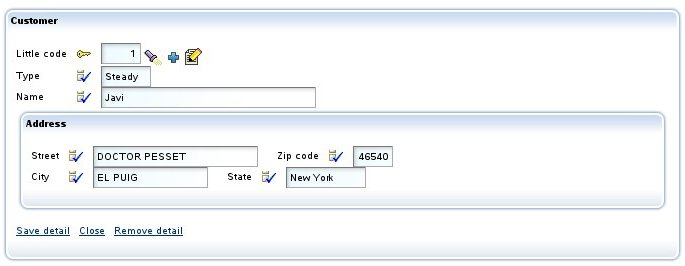
(New in v7.7) You can use
@NewView and
@EditView to specify different views for
creating and editing collection elements respectively. These annotations
override
@CollectionView for their specific operation:
@CollectionView("Simple")
@NewView("SimpleCreation") // Overrides @CollectionView for creation
@EditView("SimpleEdition") // Overrides @CollectionView for editing
@OneToMany(mappedBy="invoice")
private Collection<InvoiceDetail> details;
Using
@CollectionView("Simple") alone is equivalent to using both
@NewView("Simple") and
@EditView("Simple"). You can use
@NewView and
@EditView to override
@CollectionView
for creation or editing, or use them without
@CollectionView to
specify views only for creation or editing while keeping the default view
for the other operation.
Element
collection (new in v5.0)
Element collections do not use
@CollectionView because the data
is editable in the collection directly, like an spreadsheet. However, most
of the behavior of the detail mode is also available in element
collections, including the support of the next annotations in the
embeddable class members:
@ReadOnly, @Editor, @SearchListCondition (new in v5.1), @SearchAction (new in v5.1), @DefaultValueCalculator (new in v5.1), @OnChange (new in v5.1), @OnChangeSearch (new in v5.1), @NoSearch (new in v5.1) and
@DescriptionsList (new in v5.1).
You can use
@ListProperties in an element collection, in this
way:
@ElementCollection
@ListProperties("product.number, product.description, unitPrice, quantity, amount")
private Collection<QuoteDetail> details;
You get the next user interface:

In the case of the element collections you can put the name of a reference
(new in v5.1) in
@ListProperties if it is annotated
with
@DescriptionsList in the embeddable class. That is, you can
write this:
@ElementCollection
@ListProperties("invoice.year, invoice.number, invoice.amount, status, receptionist") // receptionist is a reference
private Collection<ServiceExpense> expenses;
Where
receptionist is not a property but a reference, a
reference annotated with
@DescriptionsList, in this way:
@Embeddable
public class ServiceExpense {
@ManyToOne(fetch=FetchType.LAZY)
@DescriptionsList
private Receptionist receptionist;
...
}
From the above code you get:
 @DescriptionsList
@DescriptionsList with
showReferenceView=true is not
supported in element collections.
Custom
edit/view action
Applies to @OneToMany/@ManyToMany and calculated collections
You can refine easily the behavior when the
('Edit') link is clicked using
@EditAction:
@EditAction("Invoice.editDetail")
@OneToMany (mappedBy="invoice", cascade=CascadeType.REMOVE)
private Collection<InvoiceDetail> details;
You have to define
Invoices.editDetail in
controllers.xml:
<controller name="Invoice">
...
<action name="editDetail" hidden="true"
image="images/edit.gif"
class="org.openxava.test.actions.EditInvoiceDetailAction">
<use-object name="xava_view"/> <!-- Not needed since v4m2 -->
</action>
...
</controller>
And finally write your action:
package org.openxava.test.actions;
import java.text.*;
import org.openxava.actions.*;
/**
* @author Javier Paniza
*/
public class EditInvoiceDetailAction extends EditElementInCollectionAction { // 1
public void execute() throws Exception {
super.execute();
DateFormat df = new SimpleDateFormat("dd/MM/yyyy");
getCollectionElementView().setValue( // 2
"remarks", "Edit at " + df.format(new java.util.Date()));
}
}
In this case you only refine hence your action extends (1)
EditElementInCollectionAction.
In this case you only specify a default value for the
remarks
property. Note that to access the view that displays the detail you can
use the method
getCollectionElementView() (2).
Also it's possible to remove the edit action from the User Interface, in
this way:
@EditAction("")
@OneToMany (mappedBy="invoice", cascade=CascadeType.REMOVE)
private Collection<InvoiceDetail> details;
You only need to put an empty string as value for the action. Although in
most case it's enough to define the collection as
@ReadOnly.
The technique to refine the view action (the action for each row, if the
collection is read only) is the same but using
@ViewAction instead of
@EditAction.
Custom
list and row actions
Applies to @OneToMany/@ManyToMany and calculated collections
Use
@ListAction to define actions that applies to
entire collection and
@RowAction (new in v4.6) to define
actions for each row.
@ListAction and
@RowAction are
very alike, indeed they are coded in the same way, the difference is that
the
@ListActions are shown in the button bar while the
@RowActions
are shown in each row.
@ListActions can be also shown in each
row if they are defined as
in-each-row="true" in
controllers.xml.
This is an example:
@ListAction("Carrier.translateName")
private Collection<Carrier> fellowCarriers;
Now a new link is shown to the user:

Also you need to define the action in
controllers.xml:
<controller name="Carrier">
...
<action name="translateName" hidden="true"
class="org.openxava.test.actions.TranslateCarrierNameAction">
</action>
...
</controller>
And the action code:
package org.openxava.test.actions;
import java.util.*;
import org.openxava.actions.*;
import org.openxava.test.model.*;
/**
* @author Javier Paniza
*/
public class TranslateCarrierNameAction extends CollectionBaseAction { // 1
public void execute() throws Exception {
Iterator it = getSelectedObjects().iterator(); // 2
while (it.hasNext()) {
Carrier carrier = (Carrier) it.next();
carrier.translate();
}
}
}
The action extends
CollectionBaseAction (1), this way you can
use methods as
getSelectedObjects() (2) that returns a
collection with the objects selected by the user. There are others useful
methods, as
getObjects() (all elements collection),
getMapValues()
(the collection values in map format) and
getMapsSelectedValues()
(the selected elements in map format). In the case of
@RowAction,
getSelectedObjects() and
getMapsSelectedValues() return
an unique element, the one of the row of the action, even if the row is
not checked.
As in the case of detail actions (see next section) you can use
getCollectionElementView().
Also it's possible to use
actions
for list mode as list actions for
@OneToMany and
@Condition
collections, but not for calculated collections,
@ManyToMany or
@OrderColumn
lists..
Starting from v5.9, row actions can appear selectively in each row
using
IAvailableAction, just like with list mode actions.
Default
list and row actions
Applies to @OneToMany/@ManyToMany and calculated collections
If you want to add some custom list actions to all the collection of your
application you can do it creating a controller called
DefaultListActionsForCollections
in your own
controllers.xml file in
src/main/resources/xava
(just
xava for v6 or older) as following:
<controller name="DefaultListActionsForCollections">
<extends controller="CollectionCopyPaste"/> <!-- New in v5.9 -->
<extends controller="Print"/>
<action name="exportAsXML"
class="org.openxava.test.actions.ExportAsXMLAction">
</action>
</controller>
In this way all the collections will have the actions of
CollectionCopyPaste
(new in v5.9) and of
Print controller (for export to
Excel and generate PDF report) and your own
ExportAsXMLAction.
This has the same effect of
@ListAction (look at
custom list actions section) but it
applies to all collections at once.
If you want to add some custom actions to all rows of the collections of
your application you can do it creating a controller called
DefaultRowActionsForCollections
(new in v4.6) in your own
controllers.xml file in
src/main/resources/xava
(just
xava for v6 or older) as following:
<controller name="DefaultRowActionsForCollections">
<extends controller="CollectionOpenInNewTab"/> <!-- New in v7.4 -->
<action name="openAsPDF"
class="org.openxava.test.actions.OpenAsPDFAction">
</action>
</controller>
In this way, the actions from the controller
CollectionOpenInNewTab
(new in v7.4) and your own
OpenAsPDFAction will be
present in each row of the collections. This has the same effect of
@RowAction (look at
custom list and row actions
section) but it applies to all collections at once.
Since v5.9 this feature applies to both persistent and calculated
collections, before calculated collections were not supported for default
list and row actions.
Since v7.4, you can use
@NoDefaultActions
to not display the default list and row actions for a specific collection.
Custom
detail actions
Applies to @OneToMany/@ManyToMany and calculated collections
Also you can add your custom actions to the detail view used for editing
each element. This is accomplish by means of
@DetailAction annotation. These actions are
applicable only to one element of collection. For example:
@DetailAction("Invoice.viewProduct")
@OneToMany (mappedBy="invoice", cascade=CascadeType.REMOVE)
private Collection<InvoiceDetail> details;
In this way the user has another link to click in the detail of the
collection element:

You need to define the action in
controllers.xml:
<controller name="Invoice">
...
<action name="viewProduct" hidden="true"
class="org.openxava.test.actions.ViewProductFromInvoiceDetailAction">
<use-object name="xava_view"/> <!-- Not needed since v4m2 -->
<use-object name="xavatest_invoiceValues"/> <!-- Not needed since v4m2 -->
</action>
...
</controller>
And the code of your action:
package org.openxava.test.actions;
import java.util.*;
import javax.ejb.*;
import org.openxava.actions.*;
/**
* @author Javier Paniza
*/
public class ViewProductFromInvoiceDetailAction
extends CollectionElementViewBaseAction // 1
implements INavigationAction {
@Inject // Since v4m2
private Map invoiceValues;
public void execute() throws Exception {
try {
setInvoiceValues(getView().getValues());
Object number =
getCollectionElementView().getValue("product.number"); // 2
Map key = new HashMap();
key.put("number", number);
getView().setModelName("Product"); // 3
getView().setValues(key); // Since v4m5 you can
getView().findObject(); // use getParentView() instead
getView().setKeyEditable(false);
getView().setEditable(false);
}
catch (ObjectNotFoundException ex) {
getView().clear();
addError("object_not_found");
}
catch (Exception ex) {
ex.printStackTrace();
addError("system_error");
}
}
public String[] getNextControllers() {
return new String [] { "ProductFromInvoice" };
}
public String getCustomView() {
return SAME_VIEW;
}
public Map getInvoiceValues() {
return invoiceValues;
}
public void setInvoiceValues(Map map) {
invoiceValues = map;
}
}
You can see that it extends
CollectionElementViewBaseAction (1)
thus it has available the view that displays the current element using
getCollectionElementView()
(2). Also you can get access to the main view using
getView()
(3) or to the parent view using
getParentView() (since
v4m5), usually
getView() and
getParentView()
matches. In
chapter 7
you will see more details about writing actions.
Also, using the view returned by
getCollectionElementView() you
can add and remove programmatically detail and list actions with
addDetailAction(),
removeDetailAction(),
addListAction() and
removeListAction(),
see API doc for
org.openxava.view.View.
Refining
collection view default behavior
Applies to @OneToMany/@ManyToMany and calculated
collections (since v5.3 @RemoveSelectedAction applies to
@ElementCollection too)
Using
@NewAction,
@AddAction (new in v5.7),
@SaveAction,
@HideDetailAction,
@RemoveAction,
@RemoveSelectedAction and
@DeleteSelectedAction(new in v7.4)
you can refine the default behavior of collection view. For example if you
want to refine the behavior of save a detail action you can define your
view in this way:
@SaveAction("DeliveryDetail.save")
@OneToMany (mappedBy="delivery", cascade=CascadeType.REMOVE)
private Collection<DeliveryDetail> details;
You must have an action
DeliveryDetails.save in your
controllers.xml:
<controller name="DeliveryDetail">
...
<action name="save"
class="org.openxava.test.actions.SaveDeliveryDetailAction">
<use-object name="xava_view"/> <!-- Not needed since v4m2 -->
</action>
...
</controller>
And define your action class for saving:
package org.openxava.test.actions;
import org.openxava.actions.*;
/**
* @author Javier Paniza
*/
public class SaveDeliveryDetailAction extends SaveElementInCollectionAction { // 1
public void execute() throws Exception {
super.execute();
// Here your own code // 2
}
}
The more common case is extending the default behavior, for that you have
to extend the original class for saving a collection detail (1), that is
SaveElementInCollection
action, then call to
super from
execute() method (2),
and after it, writing your own code.
Also it's possible to remove any of these actions from User Interface, for
example, you can define a collection in this way:
@RemoveSelectedAction("")
@OneToMany (mappedBy="delivery", cascade=CascadeType.REMOVE)
private Collection<DeliveryDetail> details;
In this case the action for removing the selected elements in the
collection will be missing in the User Interface. As you see, only it's
needed to declare an empty string as the name of the action.
New in v5.3: @RemoveSelectedAction can be used for
@ElementCollection.
By default, no Java action is used to remove a row in an element
collection, it's done using JavaScript in the browser. However, you can
use
@RemoveSelectedAction to use a Java action, so you can
refine the behavior. Extend the
RemoveSelectedInElementCollectionAction (new in
v5.3.2) to do it.
New in v7.4:
@DeleteSelectedAction. Extend the
DeleteSelectedInCollectionActionto refine the
behavior.
Action
when a collection element is selected (new in v3.1.2)
Applies to @OneToMany/@ManyToMany and calculated collections
You can define an action to be executed when a collection element is
selected or unselected. This is accomplished using the
@OnSelectElementAction annotation. For
example, imagine that you have a collection just like this one:

And you want that when a row is selected the value of the
selectedIngredientSize
field in the user interface will be updated. Let's code it.
First you have to annotate your collection:
@OnSelectElementAction("Formula.onSelectIngredient") // 1
@OneToMany(mappedBy="formula", cascade=CascadeType.REMOVE)
private Collection<FormulaIngredient> ingredients;
In this simple way (1), and thanks to the
@OnSelectElementAction
annotation, you say that when the user clicks on the checkbox of the
collection row the
Formula.onSelectIngredient action will be
executed. This action is declared in
controllers.xml, in this
way:
<controller name="Formula">
...
<action name="onSelectIngredient" hidden="true"
class="org.openxava.test.actions.OnSelectIngredientAction">
<use-object name="xava_view"/> <!-- Not needed since v4m2 -->
</action>
...
</controller>
Now, only remains the code of the
OnSelectIngredientAction
class:
public class OnSelectIngredientAction extends OnSelectElementBaseAction { // 1
public void execute() throws Exception {
int size = getView().getValueInt("selectedIngredientSize");
size = isSelected() ? size + 1 : size - 1; // 2
getView().setValue("selectedIngredientSize", new Integer(size));
}
}
The easiest way to implement the action is extending from
OnSelectElementBaseAction, this allows you to
access to the property
selected (by means of
isSelected(),
2) that indicates wheter the user has selected or unselected the row; and
row (using
getRow()) that indicates the row number of
the affected collection element.
Choosing
an editor (collection, new in v3.1.3)
Applies to @OneToMany/@ManyToMany, @ElementCollection and
calculated collections
An editor display the collection to the user and allows him to edit its
values. By default, the editor OpenXava uses for collections is a list
that shows the data in a tabular fashion, allowing to order, filter and
paging, but you can specify your own editor to display a concrete
collection using
@Editor.
For example, if you have a collection of
Customer entities and
you want to display it in some particular entity or view using a custom
user interface, such as a simple list of names, you can do it in this way:
@OneToMany(mappedBy="seller")
@Editor("CustomersNames")
private Collection<Customer> customers;
In this case the
CustomersNames editor will be used for
displaying/editing, instead of the default one. You must define your
CustomersNames
editor in the
editors.xml file in
src/main/resources/xava
(just
xava for v6 or older) of your project:
<editor name="CustomersNames" url="customersNamesEditor.jsp"/>
Also you have to write the JSP code for your editor in
customersNamesEditor.jsp.
This feature is for changing the editor for a concrete collection in a
concrete entity only, or even only in one view of that entity (using
@Editor(forViews=)).
If you want to change the editor for all collections to certain entity
type at application level then it's better to configure it using
editors.xml
file.
Learn more on
Editors
for collections section.
Condition for search list
(collection, new in v4m4)
Applies to @OneToMany/@ManyToMany and calculated collections
You can specify a condition to be applied to the list of items available
for selection. In the case of non-embedded collections. By using
@SearchListCondition
you can define a condition only applicable to the search list,
furthermore, you can use it along with the
forViews and
notForViews
property to define different criteria for different views (1). Since
v7.4,
the condition supports the use of
${this.} to refer to a
property of the entity itself (2). As shown in the following code snippet.
private int code;
@OneToMany(mappedBy="seller")
@SearchListCondition(value="${number} < 5", forViews="SearchListCondition, SearchListConditionBlank") // 1
@SearchListCondition(value="${number} < ${this.code}", forViews="SearchListConditionCode") // 2
private Collection<Customer> customers;
Displaying collections as a tree (new in v4m4)
Applies to @OneToMany/@ManyToMany collections
It is possible to render a collection as a tree:
@OneToMany(mappedBy="parentContainer", cascade = CascadeType.REMOVE)
@Tree // 1
@ListProperties("description") // 2
@OrderBy("folder, itemOrder") // 3
// @Editor(value="TreeView") // 4 Not needed since v7.5
private Collection<TreeItem> treeItems;
Annotating your collection with
@Tree (1) indicates that you want
to visualize the collection as a tree. With the
@ListProperties
(2) annotation, you can define the properties to display at each branch.
The items are displayed in the natural order of the collection defined by
@OrderBy (3). You must have a String property named
path
to be used as the branch's path; you can also name it differently by using
the
@Tree annotation (1) and indicating
pathProperty. In
version previous to v7.5 you have to annotate your collection with
@Editor("TreeView")
(4) to show the tree editor.
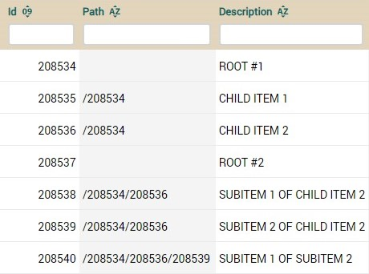
As you can see in the table, the tree is made by concatenating the id
separated by "/". Sibling items must have the same path. The editor takes
care of the creation and modification of the path property. This will look
like this:
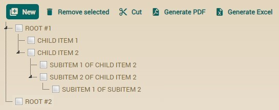
The user can drag and drop to move
items from one branch to another (since v7.2, previously done using
buttons).
The full syntax for
@Tree
is:
@Tree(
forViews="", // 1
notForViews="", // 2
pathProperty="path", // 3
idProperties="", // 4
initialExpandedState=true, // 5
orderIncrement=2, // 6 Deprecated since version 7.2
pathSeparator="/" // 7
allowMoveNodes=true // 8 New in v7.5
)
- forViews: Indicates in which views the tree
behavior is going to be applied.
- notForViews: Views which are excluded from the tree
renderization.
- pathProperty: Name of the property to be used as
the path for the tree, by default, it uses the "path" property (which
must be present in the class). You can also specify another name.
- idProperties: The tree implementation needs a
unique identification for each of the elements displayed. By default
the tree implementation use the properties annotated with @Id,
but you can define which properties the tree must use as the unique
identifier. The defined properties are comma separated.
- initialExpandedState: If true the tree is rendered
with all nodes expanded.
- orderIncrement: If you define a @OrderBy
and it represents an integer property type, the Tree implementation
uses this field to allow reordering of the tree elements, by default
the increment value is 2 and is the minimum allowed. This value allow
easy reordering of elements. (deprecated since version 7.2).
- pathSeparator: If you use a separator for your path
different than the default "/". Then you can set this property to the
value that you are using.
- allowMoveNodes: (New in v7.5) Indicates
whether the user can move nodes in the tree. If set to false,
users cannot move nodes using drag-and-drop. Default value is true.
Total
properties (new in v4.3)
Applies to @OneToMany/@ManyToMany, @ElementCollection and
calculated collections
Inside
@ListProperties you can define, between square brakets, a
set of properties of the parent entity of the collection to be shown in
the footer of the collection as total values. That is, if you define a
collection in this way:
@ListProperties("deliveryDate[invoice.deliveryDate], quantity, amount[invoice.amountsSum, invoice.vat, invoice.total]")
That including the total
properties code would be:
public class Invoice {
...
@OneToMany (mappedBy="invoice", cascade=CascadeType.REMOVE)
@ListProperties("deliveryDate[invoice.deliveryDate], quantity, amount[invoice.amountsSum, invoice.vat, invoice.total]")
private Collection<InvoiceDetail> details;
public Date getDeliveryDate() {
Date result = null;
for (InvoiceDetail detail: getDetails()) {
result = (Date) ObjectUtils.min(result, detail.getDeliveryDate());
}
return result;
}
@Money
public BigDecimal getAmountsSum() {
BigDecimal result = BigDecimal.ZERO;
for (InvoiceDetail detail: getDetails()) {
result = result.add(detail.getAmount());
}
return result;
}
@Money @Depends("vatPercentage, amountsSum")
public BigDecimal getVat() {
return getAmountsSum().multiply(getVatPercentage()).divide(HUNDRED, 2, BigDecimal.ROUND_HALF_UP);
}
@Money @Depends("vat")
public BigDecimal getTotal() {
return getVat().add(getAmountsSum());
}
}
You get:

Total properties can be used for all type of collections, that is for
@OneToMany,
@ManyToMany, @ElementCollection or calculated collections (just a
getter that returns a collection). You can add total properties to any
property of
@ListProperties and they can be of any type, not
just numbers. These total properties are from the container entity so you
have to use the reference to the container entity as prefix, that is, the
prefix of the total properties must match with the
mappedBy
reference in the case of persistent collections.
Since v5.9 total properties can be persistent, so editable, not just
calculated ones (with just a getter). Also since 5.9 a total property can
be annotated with
@Calculation. Moreover since v5.9 it's
possible to combine column summation (the + in the property) with total
properties. Therefore, you can write this
@ListProperties:
@ListProperties("vatPercentage, total+[workCost.profitPercentage, workCost.profit, workCost.total]")
Note the + after
total and then the total properties inside [].
In this case
profitPercentage is a persistent property, so it is
editable. The
profit and
total are also persistent but
with
@Calculation and
@ReadOnly (so not editable). This is
the complete code:
public class WorkCost {
...
@OneToMany (mappedBy="workCost")
@ListProperties("number, vatPercentage, total+[workCost.profitPercentage, workCost.profit, workCost.total]")
private Collection<WorkInvoice> invoices;
@DefaultValueCalculator(value=IntegerCalculator.class,
properties=@PropertyValue(name="value", value="13")
)
private int profitPercentage; // Persistent with getter and setters, editable
@Calculation("sum(invoices.total) * profitPercentage / 100")
@ReadOnly
private BigDecimal profit; // Persistent with getter and setters, not editable because of @ReadOnly
@Calculation("sum(invoices.total) + profit")
@ReadOnly
private BigDecimal total; // Persistent with getter and setters, not editable because of @ReadOnly
}
The above code produces the next
effect:

Here the 131.08 is the sum of the column, because of
total+.
Below you have
profitPercentage,
profit and
total,
the regular total properties. You can reference the column summation (that
is the
total+, the 131.08) from a
@Calculation
property using
sum(columnName). For example, in this case you
could define
profit property in this way:
@Calculation("sum(invoices.total) * profitPercentage / 100")
@ReadOnly
private BigDecimal profit;
In this case the
sum(invoices.total) inside
@Calculation
is the summation of the
total property of all the elements of
invoices
collection, that is the same of
total+ in
@ListProperties,
that is the 131.08 you see in the image.
Subcontroller
in a collection (new in v5.7)
Applies to @OneToMany/@ManyToMany
and calculated collections
With
@ListSubcontroller we can grouping several actions and show
them in a drop-down button. If you put a collection as:
@OneToMany(mappedBy="team", cascade=CascadeType.ALL)
@ListSubcontroller("Stuff")
private Collection<TeamMember> members;
You obtain this:

In
@ListSubcontroller you define the controller name, also you
have
forViews and
notForViews attributes. If you want
that the subcontroller has an image you can define it in the controller:
<controller name="Stuff" icon="exclamation">
<action name="viewNames" class="org.openxava.test.actions.ViewNamesOrRolesNamesFromTeamMember" icon="message-outline"/>
<action name="viewRoles" class="org.openxava.test.actions.ViewNamesOrRolesNamesFromTeamMember" icon="message">
<set value="true" property="roles"/>
</action>
</controller>
Chart from a collection (new in v7.4)
Applies to @OneToMany/@ManyToMany, @ElementCollection and
calculated collections
It can be done so that a collection is visualized using a chart, for this
you have to annotate the collection with
@Chart,
like this:
@OneToMany(mappedBy="company")
@Chart
Collection<Employee> employees;
For example, in this case
instead of the typical list, a chart would be displayed using the data
from the elements of the collection, like this:
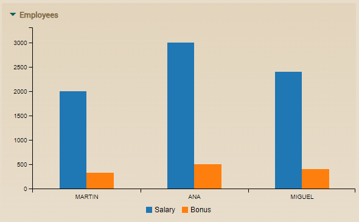
There would be a group of bars
for each element in the collection, in this case, if there are 3
employees in the collection, 3 groups of bars appear.
OpenXava determines by default
which properties to use for the label that appears on each group of bars
and which properties to use to obtain the values of the bars. Look at
the
JavaDoc
of @Chart to learn more about the default values. However,
the programmer always has the option to define their own properties
using the
labelProperties and
dataProperties attributes
of
@Chart, like this:
@OneToMany(mappedBy="company")
@Chart(labelProperties="firstName, lastName", dataProperties="salary")
Collection<Employee> employees;
Which would generate a chart
like this:
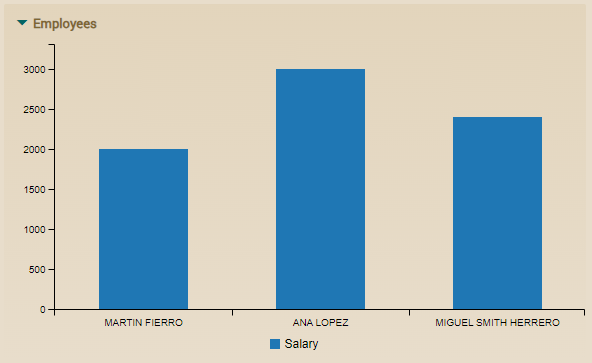
Given that we have set labelProperties=“firstName,
lastName”, the label used in each column of the chart is the
concatenation of the employee’s first name and last name, like MIGUEL
SMITH HERRERO for example. Also note that only one column per employee
appears, with the salary value, because we have set dataProperties=“salary”.
Of course, more properties can be put in dataProperties separated
by commas.
Starting from version 7.5, a new
attribute
type is available in
@Chart. This attribute
allows you to specify the type of chart to be displayed. The possible
values are:
- BAR: Displays a bar chart (this is the default)
- LINE: Displays a line chart
- PIE: Displays a pie chart
For example:
@OneToMany(mappedBy="corporation")
@Chart(type=ChartType.LINE)
private Collection employees;
In the case of pie charts, as
well as with other chart types, it's common to display aggregated data.
Rarely would we want a pie chart showing all (or many) records from a
table (which would be a collection of entities). Therefore, it's usually
better to use an auxiliary class to show aggregated or summary data.
Here's an example:
@Chart(type = ChartType.PIE)
public Collection<Ratio> getExternalEmployeesRatio() {
EntityManager em = XPersistence.getManager();
// Query to count internal employees (email contains corporation name)
Query internalQuery = em.createQuery(
"SELECT COUNT(e) FROM CorporationEmployee e " +
"WHERE e.corporation.id = :corporationId AND LOWER(e.email) LIKE :pattern");
internalQuery.setParameter("corporationId", getId());
internalQuery.setParameter("pattern", "%" + name.toLowerCase() + "%");
Long internalCount = (Long) internalQuery.getSingleResult();
// Query to count external employees (email does not contain corporation name)
Query externalQuery = em.createQuery(
"SELECT COUNT(e) FROM CorporationEmployee e " +
"WHERE e.corporation.id = :corporationId AND LOWER(e.email) NOT LIKE :pattern");
externalQuery.setParameter("corporationId", getId());
externalQuery.setParameter("pattern", "%" + name.toLowerCase() + "%");
Long externalCount = (Long) externalQuery.getSingleResult();
// Create and return the collection of ratios
Collection<Ratio> ratios = new ArrayList<>();
ratios.add(new Ratio("Internal", internalCount.intValue()));
ratios.add(new Ratio("External", externalCount.intValue()));
return ratios;
}
Where Ratio is a simple
class that represents a ratio with a description and a value:
@Data
@NoArgsConstructor
@AllArgsConstructor
public class Ratio {
String description;
int value;
}
This would generate a pie chart
like this:
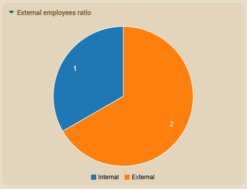
In addition, the forViews
and notForViews attributes are available in @Chart.
Simple list (new in v7.4)
Applies to @OneToMany/@ManyToMany, @ElementCollection and
calculated collections
With the
@SimpleList
annotation, the list is displayed as read-only, without actions, filters,
pagination, sorting, etc. That is, if we annotate our collection with
@SimpleList,
in this way:
@OneToMany(mappedBy="parent")
@SimpleList
Collection<StaffTurnover> turnoverByYear;
It would be displayed like this:
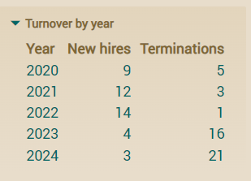
Useful when the user needs to
see the data in a simple and clear way, without having to interact with
it, such as in a dashboard, for example.
In addition, the forViews
and notForViews attributes are available in @SimpleList.
As with all visual elements in
OpenXava, you can change the style of the simple list (
@SimpleList)
using CSS. The available CSS class is
.ox-simple-list. You can
include the CSS code in
custom.css or in your own style as
explained in the
documentation on custom
visual styling.
Choose tab for search
action (collection, new in v7.4)
Applies to @OneToMany/@ManyToMany and calculated
collections
With @SearchListTab,
you can specify which tab to display in the dialog when use an add
action.
@OneToMany(mappedBy="seller")
@SearchListTab("Demo")
private Collection<Customer> customers;
For this in the
Customer we must have a tab called
Demo:
@Entity
@Tab(name="Demo", properties="name, type, seller.name", defaultOrder="${name} desc", baseCondition="${type} = 'R'")
public class Customer {
In addition, the
forViews and
notForViews attributes
are available in
@SearchListTab.
Hide default list and row actions (new
in v7.4)
Applies to @OneToMany/@ManyToMany and calculated
collections
With @NoDefaultActions
you can hide actions from the DefaultListActionsForCollections
and DefaultRowActionsForCollections controllers.
@OneToMany(mappedBy="vendedor")
@NoDefaultActions
private Collection<Carrier> carriers;
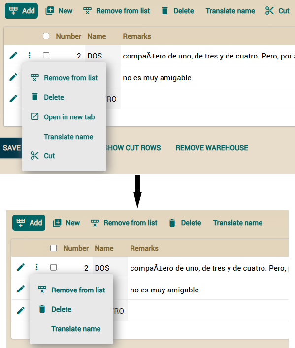
In addition, the forViews and notForViews
attributes are available in @NoDefaultActions.
Transient properties for UI controls
With
@Transient (JPA) you define a property that is
not stored in database but you want to show to the user. You can use it to
provide UI controls to allow the user to manage his user interface.
An example:
@Transient
@DefaultValueCalculator(value=EnumCalculator.class,
properties={
@PropertyValue(name="enumType", value="org.openxava.test.model.Delivery$DeliveredBy")
@PropertyValue(name="value", value="CARRIER")
}
)
@OnChange(OnChangeDeliveryByAction.class)
private DeliveredBy deliveredBy;
public enum DeliveredBy { EMPLOYEE, CARRIER }
You can see that the syntax is exactly the same as in the case of a
regular property of an entity; you can even use
enum and
@DefaultValueCalculator. After defining the
property you can use it in the view as usual, for example with
@OnChange or putting it as member of a view.
View actions
In addition of associating actions to a property, reference or collection,
you also can define arbitrary actions inside your view, in any place. In
order to do this we use the qualified name of action using brackets () as
suffix, in this way:
@View( members=
"number;" +
"type;" +
"name, Customer.changeNameLabel();" +
...
The visual effect will be:

You can see the link 'Change name label' that will execute the action
Customer.changeNameLabel
on click on it.
If the container view of the action is not editable, the action is not
present. If you want that the action is always enabled, even if the view
is not editable, you have to use put the word ALWAYS between the brackets,
as following:
@View( name="Simple", members=
"number;" +
"type;" +
"name, Customer.changeNameLabel(ALWAYS);" +
...
The standard way to expose actions to the user is using the controllers
(actions in a bar), the controllers are reusable between views, but
sometimes you will need an action specific to a view, and you want display
it inside the view (not in the button bar), for these cases the view
actions may be useful.
See more about actions in
chapter
7.
Transient
class: Only for creating views
In OpenXava it is not possible to have a view without model. Thus if you
want to draw an arbitrary user interface, you need to create a class, not
to declare it as entity and define your view in it.
An transient class is not associated to any table of the database,
typically it's used only for display User Interfaces not related to any
data in database.
An example can be:
package org.openxava.test.model;
import javax.persistence.*;
import org.openxava.annotations.*;
/**
* Example of an transient OpenXava model class (not persistent). <p>
*
* This can be used, for example, to display a dialog,
* or any other graphical interface.<p>
*
* Note that is not marked as @Entity <br>
*
* @author Javier Paniza
*/
@Views({
@View(name="Family1", members="subfamily"),
@View(name="Family2", members="subfamily"),
@View(name="WithSubfamilyForm", members="subfamily"),
@View(name="Range", members="subfamily; subfamilyTo")
})
public class FilterBySubfamily {
@ManyToOne(fetch=FetchType.LAZY) @Required
@NoCreate(forViews="Family1, Family2")
@NoModify(forViews="Family2, WithSubfamilyForm")
@NoSearch(forViews="WithSubfamilyForm")
@DescriptionsLists({
@DescriptionsList(forViews="Family1",
condition="${family.number} = 1", order="${number} desc"
),
@DescriptionsList(forViews="Family2",
condition="${family.number} = 2"
)
})
private Subfamily subfamily;
@ManyToOne(fetch=FetchType.LAZY)
private Subfamily subfamilyTo;
public Subfamily getSubfamily() {
return subfamily;
}
public void setSubfamily(Subfamily subfamily) {
this.subfamily = subfamily;
}
public Subfamily getSubfamilyTo() {
return subfamilyTo;
}
public void setSubfamilyTo(Subfamily subfamilyTo) {
this.subfamilyTo = subfamilyTo;
}
}
For defining a model class as transient you only need to define a regular
Java class without
@Entity annotation. You mustn't put the
mapping annotations nor declare properties as key.
This way you can design a dialog that can be useful, for example, to print
a report of families or products filtered by subfamily.
Transient classes are used with
only
detail modules. Since v5.0 you must
define
explicitly a module in application.xml for each transient class,
until v4.9.1 you could use a transient class without defining a module, it
was only needed to generate the portlet.
Until v7.3.3 the package for transient model classes must be the same of
the persistent classes. However, since v7.4 transient classes can be also
in sibling packages of model package, that is if your model package is
com.yourcompany.yourapp.model
you can put transient classes in
com.yourcompany.yourapp.dashboards
or
com.yourcompany.yourapp.dialogs, for example, even if these
packages does not contain any persistent class.
With this simple trick you can use OpenXava as a simple and flexible
generator for user interfaces although the displayed data won't be stored.
deliveryDate[invoice.deliveryDate]<controller
name="TeamMemberSub" icon="exclamation"> <action
name="viewNames"
class="org.openxava.test.actions.ViewNamesOrRolesNamesFromTeamMember"
icon="message-outline"/> <action name="viewRoles"
class="org.openxava.test.actions.ViewNamesOrRolesNamesFromTeamMember"
icon="message"> <set value="true" property="roles"/>
</action> </controller